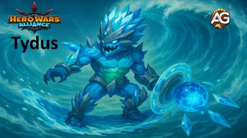
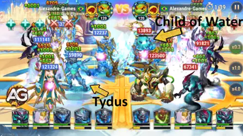
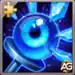
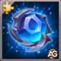

Guia do Tydus – Invocador de Titã da Água em Hero Wars Alliance
- Por: Alexandre Domingos. .
Conheça Tydus, o Invocador da Água que traz equilíbrio e força para o campo de batalha. Mais do que apenas um causador de dano, ele é um curandeiro e purificador que pode mudar o rumo de qualquer batalha entre Titãs.
Seja você um veterano ou um novato na equipe de Água, este guia mostrará como Tydus pode desbloquear o verdadeiro potencial do seu exército de Titãs e levar sua equipe à vitória.

Quem é Tydus?
Tydus é um Invocador da Água em Hero Wars Alliance, conhecido por sua versatilidade excepcional e suporte à equipe. Ele pode causar dano impressionante, restaurar a saúde dos aliados e remover efeitos negativos, tornando-se um membro essencial de qualquer equipe de Água.
- Função: Invocador
- Elemento: Água
- Posição: Linha do Meio
Sua sinergia brilha quando luta ao lado de outros Titãs da Água — especialmente quando seis estão presentes no campo de batalha. Juntos, eles criam uma poderosa onda de cura e destruição.
Tydus não é apenas a peça central do elemento Água, mas também um aliado confiável em qualquer formação de Guerra dos Titãs. Com a estratégia certa, ele pode transformar sua equipe em uma força imparável.
Prós e Contras de Tydus - Hero Wars Alliance: Mobile
✅ Prós
- Excelente suporte à equipe graças à sua habilidade suprema, Filho da Água, que cura os aliados com menor Vida.
- O escalonamento com Ataque Físico permite uma cura poderosa e ótima sinergia com Titãs de Água como Mairi e Sigurd.
- Eficaz em equipes de elementos mistos, pois sua cura não é restrita apenas a aliados de Água.
- Muito útil no modo Masmorra para manter a equipe viva em lutas prolongadas.
- Pode aumentar significativamente a sobrevivência dos Titãs da linha de frente.
❌ Contras
- Baixo dano direto — depende fortemente da sinergia da equipe em vez da força individual.
- Mais fraco contra Titãs de Terra, que causam dano bônus e têm defesa extra contra Titãs de Água.
- O Filho da Água não pode atacar, reduzindo o potencial ofensivo em batalhas longas.
- Vulnerável se a cura for interrompida ou se a equipe for eliminada rapidamente.
- Menos eficaz no PvP contra composições explosivas com alto dano em área.
Guia de Habilidades de Tydus - Hero Wars Alliance
Aprenda como as habilidades de Tydus funcionam e por que elas são vitais em batalhas PvP. Seus poderes baseados na Água curam, protegem e dominam Titãs inimigos com trabalho em equipe e tempo preciso.
Filho da Água
Esta habilidade permite que Tydus invoque o Filho da Água por 7 segundos. Ele não ataca nem se move, mas constantemente ajuda sua equipe ao roubar Vida do inimigo mais forte e transferi-la para o aliado mais fraco uma vez por segundo. Isso significa que, durante a batalha, Tydus atua como um estabilizador — mantendo sua equipe viva enquanto drena as linhas de frente do oponente. Em PvP, essa habilidade é extremamente valiosa contra equipes com alto dano explosivo, pois enfraquece seus principais atacantes enquanto cura os seus.
Fórmula: Rouba (40% ATQ) de Vida.

💭 Nota de Estratégia: Tydus tem um desempenho muito melhor quando está em equipe com pelo menos outros dois Titãs de Água. Essa formação já desbloqueia boas combinações em PvP, mesmo em equipes de elementos mistos. Tanto na Masmorra (Dungeon) quanto no PvP, ele tem ótima sinergia com todos os Titãs de Água, oferecendo excelente sustentação e controle por meio de suas habilidades. No entanto, uma equipe totalmente de Água pode ter dificuldades defensivas — ela tende a ser fraca contra composições de Terra, que neutralizam sua vantagem de cura com alto dano explosivo e grande durabilidade.
Corrente Profunda
Corrente Profunda é uma habilidade passiva que aumenta o poder de todos os Titãs de Água aliados, tornando a equipe mais forte conforme mais deles permanecem vivos. Cada Titã de Água adiciona novos bônus:
- 2 Titãs de Água: Dano extra contra Titãs de Fogo.
- 3 Titãs de Água: Defesa extra contra Titãs de Fogo.
- 4 Titãs de Água: Tydus ganha +400 de Energia ao usar habilidades.
- 5 Titãs de Água: Usar a primeira habilidade cura todos os Titãs de Água e remove todos os efeitos negativos.
- 6 Titãs de Água: Reduz todo o dano recebido em 50%.
Esta habilidade brilha em PvP, especialmente em equipes totalmente de Água. Ela recompensa os jogadores que mantêm seus Titãs de Água vivos, criando um efeito bola de neve — cada Titã sobrevivente torna a equipe mais resistente, poderosa e difícil de eliminar. A cura e a purificação no quinto nível podem mudar completamente o rumo de uma luta contra composições de Fogo.
Fórmula: Dano Extra e Defesa: 125674 (25% ATQ)
Vida restaurada ao usar a primeira habilidade: 30% da Vida Máxima.
💧 Nota: O Filho da Água invocado é considerado um verdadeiro Titã de Água enquanto estiver ativo. Isso significa que, mesmo que sua equipe tenha apenas 3 Titãs de Água e 2 Titãs de Luz, Tydus ainda pode ativar o 4º bônus de sinergia de sua habilidade Corrente Profunda (+400 de Energia). Essa interação o torna uma excelente escolha para batalhas PvP, permitindo composições de equipe flexíveis que ainda se beneficiam dos efeitos de sinergia da Água.
Melhor Skin para o Titã Tydus — Hero Wars Alliance
A habilidade suprema de Tydus, Filho da Água, invoca um espírito da Água que rouba Vida do inimigo com mais HP e a transfere para o aliado mais fraco. A quantidade de cura equivale a (40% do Ataque Físico), tornando sua única skin extremamente valiosa em todas as composições de equipe.
Skin Padrão
Ataque Físico: +196.800
Prioridade de Evolução: Muito Alta – Esta é a única skin de Tydus e uma melhoria indispensável. Sua habilidade Filho da Água cura os aliados com base em (40% do Ataque Físico), portanto aumentar esse atributo amplia bastante tanto a cura quanto o impacto geral em combate.
Prioridade de Evolução dos Artefatos de Tydus — Hero Wars Alliance
A cura de Tydus escala com (40% do Ataque Físico), tornando os artefatos que aumentam esse atributo os mais valiosos. A sobrevivência e a defesa elemental têm importância secundária, sendo mais situacionais em batalhas de PvP e Masmorra.

Artefato de Arma de Tydus – Maça de Siungur
Ataque Físico: +80.000
Prioridade de Evolução para PvP: Muito Alta – O melhor artefato para evoluir primeiro. Aumenta o Ataque Físico de todos os Titãs por 9 segundos após a ativação, ampliando o poder de cura de Tydus e a sinergia da equipe em qualquer formação de PvP.
Prioridade de Evolução para Masmorra: Muito Alta – Essencial nas masmorras, pois o aumento constante de Ataque Físico ajuda a manter a cura estável, garantindo que a equipe de Água sobreviva por mais tempo em batalhas consecutivas.

Artefato de Coroa de Tydus – Coroa da Água
Dano extra contra Titãs de Fogo: +255.000
Defesa extra contra Titãs de Fogo: +100.500
Prioridade de Evolução para PvP: Média – Útil apenas ao enfrentar Titãs de Fogo, o que limita seu impacto no PvP. O bônus elemental é situacional e não melhora diretamente a cura de Tydus.
Prioridade de Evolução para Masmorra: Média – Oferece proteção contra equipes de Fogo na Masmorra, mas seu valor geral continua moderado, já que outros elementos aparecem com mais frequência em batalhas mistas.
Artefato de Selo de Tydus – Selo de Invocação
Ataque Físico: +90.000
Vida: +4.275.000
Prioridade de Evolução para PvP: Alta – Oferece uma boa combinação de Ataque Físico para melhor cura e Vida para maior sobrevivência. É um pouco menos impactante que a Arma no PvP, mas ainda assim muito valioso em lutas mais longas.
Prioridade de Evolução para Masmorra: Alta – O bônus de Vida ajuda Tydus a resistir nas ondas mais profundas da Masmorra, enquanto o aumento de Ataque Físico mantém a cura constante em múltiplas batalhas.
Como Contra-Atacar o Titã Tydus – Hero Wars Alliance
Os Titãs de Terra naturalmente contra-atacam os Titãs de Água devido à sua vantagem elemental. Em Hero Wars Alliance, Angus, Eden e Verdoc se destacam como os contra-ataques mais eficazes contra Tydus, enquanto Avalon e Sylva fornecem suporte valioso para fortalecer ainda mais as equipes de Terra.
A combinação de Dano Físico, Defesa Extra e Dano Bônus contra Titãs de Água os torna capazes de superar as habilidades defensivas e a cura constante de Tydus. Quando usados juntos — especialmente Verdoc, Avalon e Sylva — formam uma sinergia poderosa que melhora tanto o ataque quanto a sobrevivência em batalha.
Abaixo você encontrará explicações detalhadas sobre como cada Titã de Terra atua contra Tydus.
Por que ele derrota Tydus: A habilidade Ira da Terra de Angus causa Dano Físico a todos os inimigos por 8 segundos ((90% ATQ)), ignorando completamente a cura de Tydus e desgastando toda a linha de frente de Água. Como Tydus não consegue mitigar esse dano em área constante de forma eficaz, Angus se torna uma das melhores opções anti-Tydus tanto na Masmorra quanto no PvP.

Por que ele derrota Tydus: A habilidade Fardo da Criação de Eden lança uma enorme rocha que causa Dano Físico ((350% ATQ)) a todos os inimigos próximos. Esse ataque explosivo pode romper instantaneamente a linha de frente dos Titãs de Água e impedir que Tydus mantenha sua equipe. Além disso, o efeito de controle de grupo de Eden pode interromper a rotação de habilidades de Tydus, evitando que ele use todo o seu potencial de cura e dano.
Por que ele derrota Tydus: A habilidade passiva de Verdoc, Chamado da Terra, fortalece significativamente toda a sua equipe de Titãs de Terra contra Titãs de Água. Os bônus incluem Dano Extra e Defesa Extra ao enfrentar Titãs de Água ((25% ATQ)), oferecendo uma enorme vantagem tanto em ataque quanto em durabilidade. Isso torna Verdoc essencial para enfrentar equipes de Água completas que incluem Tydus, garantindo que os Titãs de Terra recebam menos dano e causem mais a cada golpe.
Em resumo, Angus oferece o melhor dano consistente ao longo do tempo, Eden traz forte dano explosivo e controle, e Verdoc fornece bônus em toda a equipe que amplificam o desempenho geral. Juntos, eles formam a melhor composição para contra-atacar Tydus e outros Titãs de Água tanto no PvP quanto na Masmorra.
Conclusão – Guia de Tydus Hero Wars Alliance: Mobile
Tydus é um dos Titãs de suporte mais confiáveis em Hero Wars Alliance: Mobile, oferecendo cura constante e sustentação para seus aliados através de sua habilidade Filho da Água. Seu desempenho escala diretamente com o atributo de Ataque Físico, tornando o investimento ofensivo altamente recompensador tanto em batalhas de PvP quanto em Masmorra.
Embora ele não cause grande dano explosivo e tenha dificuldades contra Titãs de Terra, seu valor como curandeiro e estabilizador o torna indispensável nas equipes de Água e versátil o suficiente para formações de elementos mistos. Jogadores que priorizam equilíbrio e resistência em equipe encontrarão em Tydus uma peça fundamental em sua formação de Titãs.

Sugestões de Vídeo:
Você pode ter interesse:
 Titã Asherona - Domine a Titã de Fogo
Titã Asherona - Domine a Titã de Fogo Super Titã Tenebris Hero Wars
Super Titã Tenebris Hero Wars Guia do Titã Verdoc – Hero Wars Alliance: Mestre das Invocações da Terra
Guia do Titã Verdoc – Hero Wars Alliance: Mestre das Invocações da Terra
Deixe Sua Opinião!
Você gostou do nosso Guia do Titã Tydus para Hero Wars Mobile? Há algo que não entendeu ou gostaria de sugerir mudanças? Convidamos você a se juntar à nossa sessão de comentários na página do Alexandre Games Blog. Não hesite em expressar sua opinião, clarificar suas dúvidas e compartilhar sua sugestões.
Clique no botão abaixo para começar: